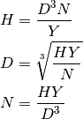

shaft – Shafts and Shafting¶
Legacy Output¶
This is output from option 2, Shaft with pulleys.
SHAFTING DESIGN by George Murphy VE3ERP
Press number in ( ) to describe shaft
(1) Main shaft
(2) Shaft with pulleys
(3) Stub shaft
(0) EXIT
SHAFTING SPECIFICATIONS:
Shaft R.P.M. .................? 3500
( Press [ENTER] if you want to determine shaft dia. from other data )
Shaft diameter (in) ..........?
( Press [ENTER] if you want to determine horsepower from other data )
Horsepower ...................? 80
SHAFTING SPECIFICATIONS
Minimum shaft diameter (in.).. 1.069
Shaft R.P.M. ................. 3500.000
Maximum horsepower ........... 80.000
Max. inches between bearings.. 65.253
Analysis¶
This is a Solver for Diameter, D, RPM, N, and maximum horsepower, H.
It also computes “Max. inches between bearings”, L, for main shaft and shaft with pulleys.
There are three shaft configurations
- Main shaft: Y=80, Z=107.4
- Shaft with pulleys: Y=53.5, Z=62.4
- Stub shaft: Y=38. Do not show bearings.

The bearing calculation:
Implementation¶
hamcalc.construction.shaft
Shaft Solver for diameter, horsepower and RPM.
There are three callable objects defined here:
- hamcalc.construction.shaft.main_shaft(D, N, H)¶
Solves shaft design problems for main shafts.
Parameters: - D – Diameter
- N – RPM
- H – Horsepower
Returns: hamcalc.lib.AttrDict with missing values. This includes L, the bearing spacing.
- hamcalc.construction.shaft.pulley_shaft(D, N, H)¶
Solves shaft design problems for main shafts.
Parameters: - D – Diameter
- N – RPM
- H – Horsepower
Returns: hamcalc.lib.AttrDict with missing values. This includes L, the bearing spacing.
- hamcalc.construction.shaft.stub_shaft(D, N, H)¶
Solves shaft design problems for main shafts.
Parameters: - D – Diameter
- N – RPM
- H – Horsepower
Returns: hamcalc.lib.AttrDict with missing value. Bearing spacing, L is not computed.
Test Cases
>>> import hamcalc.construction.shaft as shaft
>>> pulley = shaft.pulley_shaft( N=3500, H=80 )
>>> round(pulley.D,3)
1.069
>>> round(pulley.L,3)
65.253
>>> main = shaft.main_shaft( N=3500, H=80 )
>>> round(main.D,3)
1.223
>>> round(main.L,3)
122.815